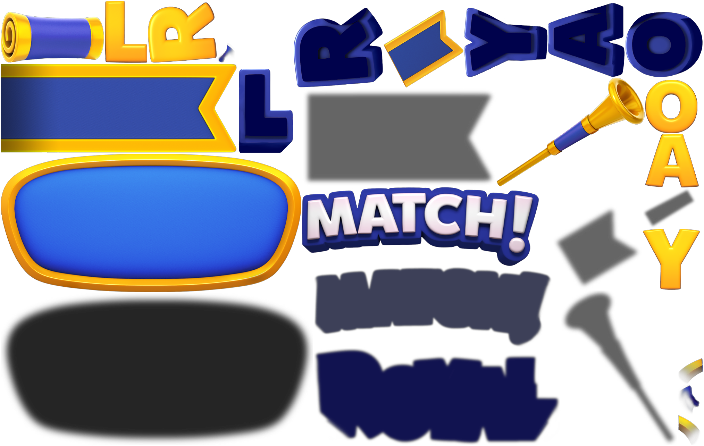

Trang chủ › Lõi gameplay
🎯 Lõi gameplay
Luật match-3, special item, vật cản, goal, luồng level, mạng. · 12 tính năng

Biến thể bàn cờ (Modifiers)
Bộ trường cấu hình trong file level quyết định bàn cờ vận hành ra sao, ngoài danh sách obstacle tính vào mục tiêu.
🔓 Level 18 (HasHoleInGrid – mốc đầu tiên trong danh sách unlock; Sets/Predefined/Colors đã có từ level 1)
38 use case · 42 config

Ghi và phát lại ván đấu
Công cụ nội bộ ghi lại seed, nhịp từng khung hình và mọi thao tác của một ván, rồi phát lại chính xác để dựng lại bug.
🔓 Không có UI người chơi – chỉ chạy khi RecordManager/ReplayManager được đăng ký vào LevelContext (build nội bộ, suy luận)
7 use case · 14 config
Hệ thống điểm (scorer)
Bộ chấm điểm nội bộ giúp chong chóng, rocket và TNT tự chọn ô đáng phá nhất; điểm hiển thị chỉ có trong Clash of Champions.
🔓 Level 1 (chạy ngầm mỗi khi có special item tự dẫn)
11 use case · 25 config

Luật match-3 trong level
Đổi chỗ 2 ô kề nhau để xếp từ 3 viên cùng màu trở lên, tạo nổ và sinh vật phẩm đặc biệt.
🔓 Level 1 (luôn có, không có cờ mở khóa; các mẫu đặc biệt được dạy dần qua LevelTutorialManager)
19 use case · 40 config

Luồng chơi level (LevelFlow)
Xương sống của Royal Match: nạp level, vào bàn match-3 với số nước giới hạn, rồi kết ván theo Win, Ego, Fail, Quit hoặc NoPossibleMove.
🔓 Level 1 (có sẵn, không có điều kiện mở khóa)
22 use case · 55 config

Mạng (Lives)
Tài nguyên chặn cửa vào level: tối đa 5 mạng (8 với Royal Pass Gold), hồi 1 mạng mỗi 30 phút theo giờ server.
🔓 Level 1 (có sẵn, không có điều kiện)
16 use case · 31 config
Mục tiêu level (Goals)
Mỗi màn chơi có 1–4 mục tiêu trên thanh trên cùng; dọn hết mục tiêu trước khi hết nước là thắng.
🔓 Level 1 (goal Box là loại xuất hiện sớm nhất)
12 use case · 119 config

Special item và tổ hợp
Bốn vật phẩm đặc biệt Rocket, TNT, Lightball, Propeller sinh từ match lớn và ghép thành 10 tổ hợp phá bàn cực mạnh.
🔓 Level 1 (special sinh từ match, tutorial dạy dần)
18 use case · 29 config

Super Duke và Magic Duke
Hai trợ thủ Duke mở ở level 402: một cho nước đi bù sau 5 lần thắng, một ném special item khi thanh nạp đầy.
🔓 Level 402 (SuperDukeUnlockLevel = 402, MagicDukeActivationLevel = 402)
14 use case · 27 config

UI trong level
Khung UI world-space của màn chơi: mục tiêu, nước đi, vua Robert, thanh booster, Settings và toàn bộ dialog thắng/thua.
🔓 Level 1 (UI cơ bản); nút booster mở dần theo level, hiện level mở khoá trên nút
17 use case · 29 config
Vật cản & item (Obstacles)
46 vật cản và mục tiêu bàn cờ từ Box tới Ceramic, quyết định cách người chơi phá lớp trong 3.600 level đầu.
🔓 Level 1 (Box); mỗi vật cản có mốc xuất hiện riêng
98 use case · 104 config
Định dạng file level
Mỗi màn Royal Match là một file FlatBuffers nhị phân với root table FTiledLevel gồm 55 field mô tả trọn vẹn thiết kế bàn cờ.
🔓 Level 1
10 use case · 77 config